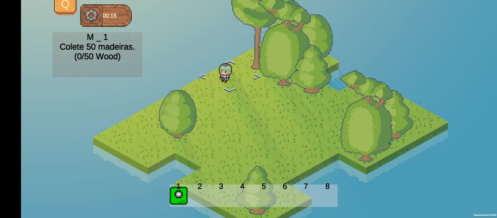
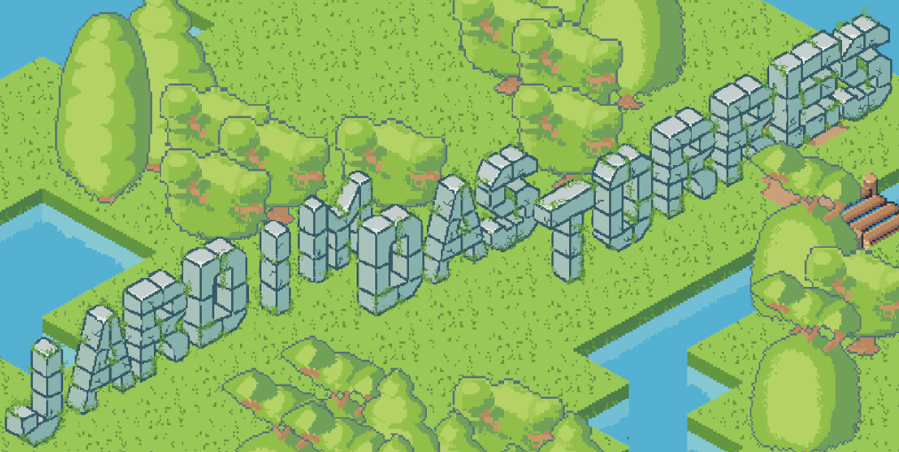
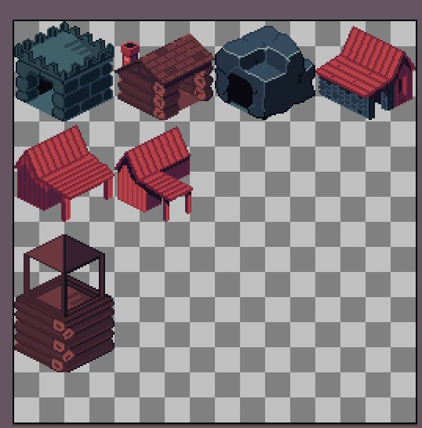

Tower Defense / Gerenciamento de Recursos
Jardim das Torres
Público-Alvo
Jogadores que gostam de estratégia casual/estratégica, fãs de gerenciamento e estéticas marcantes.
A premissa em uma frase
Defenda e cultive seu jardim contra invasores enquanto gerencia recursos vitais para expandir suas defesas.
Sinergia Saciante
O que você planta e gerencia é o que te defende.
Estética Marcante
Visual vibrante, saturado e carismático (estilo kawaii / vinyl toy em perspectiva isométrica 2D).
Loop de Tensão e Calmaria:
O equilíbrio entre o momento de planejar/colher e o momento de defender.

Torres / Plantas Defensivas
Torre de Ataque
Torre de Suporte
Torre de Bloqueio
Invasor Básico
Invasor Veloz
Direitos autorais © MoraisStudio
Desenvolvido por ManrrikeMorais

Loop Principal
Fase de Gerenciamento
Como o jogador planta, colhe, gera energia/recursos e posiciona suas torres/plantas no cenário isométrico.
Fase de Defesa
Como as hordas de inimigos avançam, quais caminhos eles tomam e como as torres reagem autonomamente.
Progressão
Como o jogador passa de fase ou expande o terreno do jardim.
